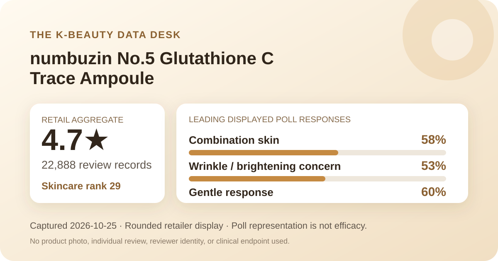
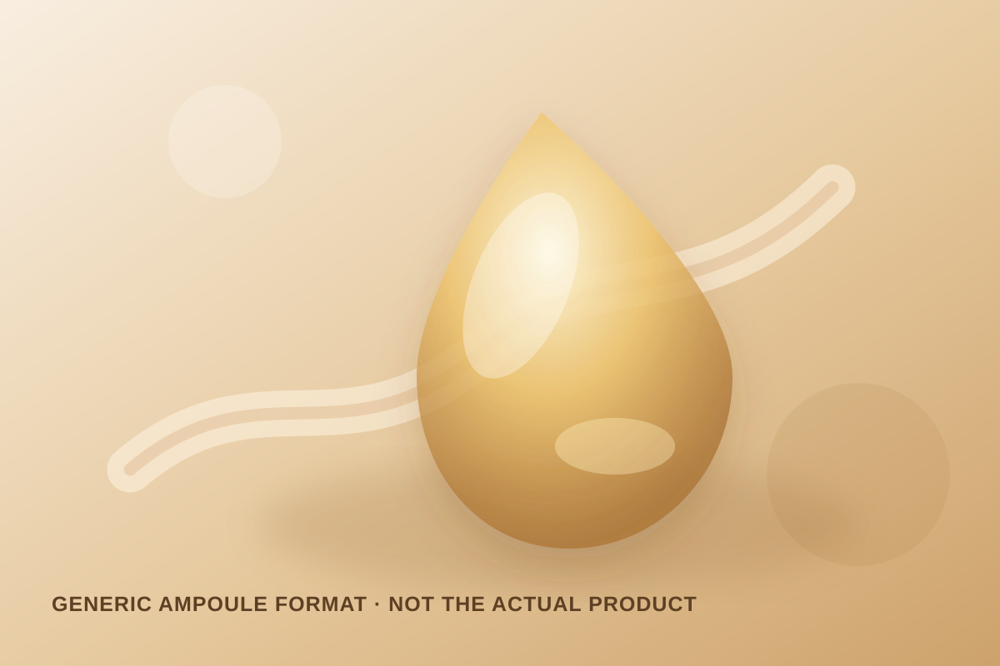

Data captured October 25, 2026. This analysis uses only Olive Young Korea's displayed aggregate rating, star shares, anonymous shopper polls, and retailer-level automated theme summary. It does not reproduce or translate individual review text, names, or photos.

The short version: The listing showed 4.7 out of 5 from 22,888 review records. Five-star selections accounted for 80% of the displayed distribution. Combination skin led the skin-type poll, wrinkle or brightening concern led the concern poll, and 60% selected the gentle response. These are retail signals, not measured skin outcomes.
The visible average was 4.7 stars. The product header displayed 22,888 review records, and the detailed review panel repeated that count and score. This agreement matters because the ranking listing is a 30 ml plus 30 ml promotional configuration, while review records may connect to other historical configurations. Matching title, rating, count, and source identifier reduces the risk of joining statistics from the wrong product family.
The detailed panel displayed these rounded shares:
The displayed rows total 101%, an ordinary consequence of showing whole percentages. That is why the percentages should not be multiplied by 22,888 to manufacture exact counts. The supported reading is that five-star selections clearly dominated while a visible minority selected lower scores. The 4.7 average is favorable, but its distribution is less top-heavy than many 4.9-rated products in this archive.
A large retail record base broadens the satisfaction signal; it does not remove self-selection, promotional incentives, routine differences, short use periods, reformulation, or packaging changes. People who leave a rating are not a randomized sample, and stars do not isolate what this ampoule caused.
The displayed skin-type poll showed 58% combination, 34% dry, and 8% oily. Combination skin formed the largest group by a 24-point margin over dry skin. That makes combination the clearest representation signal in this poll, but it is not evidence that combination skin obtained a better outcome.
The labels are self-reported categories. They can shift with season, climate, cleansing, medication, and the rest of a routine. The interface does not provide controlled outcomes by skin type or establish that the ampoule was the only changed variable. The poll should guide questions to ask, not decide suitability.
The concern poll displayed 53% wrinkle or brightening concern, 24% hydration, and 23% soothing. These rows total 100%. The leading label fits the listing's mark-and-brightening positioning, but the poll records what respondents selected as a concern, not what the formula changed.
No melanin index, colorimetry, lesion count, spot area, wrinkle depth, elasticity measure, blinded assessment, comparator, or treatment duration was captured. The word “glutathione” in the listing name also does not reveal ingredient concentration, stability, delivery, or finished-formula performance. The defensible conclusion is about audience interest, not efficacy.
The irritation poll showed 60% gentle, 37% ordinary, and 3% felt irritation. Gentle was the largest answer, but the distribution is meaningfully mixed: four in ten displayed responses were not in the gentlest lane. That does not make the product harsh, and it does not make the 60% a safety rate. It simply argues against treating the aggregate as a universal tolerance promise.
People with reactive skin, an impaired barrier, or a routine containing several strong leave-on products should check the current regional label and directions. A patch test performed according to appropriate guidance may be useful, and any adverse response is a reason to stop. The retail poll is not medical advice or a substitute for individualized care.
The retailer's automated recent-review summary labeled 89% of its analyzed subset as positive. At a broad level, it grouped discussion around perceived mark or brightening changes, mild-feeling use despite the treatment-oriented positioning, and moisture or smoother-feeling texture impressions. These are machine-generated themes for a recent subset, not measurements across all 22,888 records.
This article does not reproduce or translate the underlying reviews. It also does not convert the summary into a claim. A mark-related theme is not a pigmentation study, a mildness theme cannot predict tolerance, and a moisture theme is not an instrument reading. The summary is useful only as an anonymous map of recurring discussion topics.

The retailer places the item in the essence, serum, and ampoule category and calls it an ampoule. In general retail language, an ampoule is a leave-on liquid or gel-like treatment step, often marketed as a focused routine product. That category label does not establish a standardized concentration, potency, texture, delivery system, or clinical effect.
I did not handle or apply this product. The illustration above is intentionally generic and should not be read as a reconstruction of the real color, viscosity, scent, tack, absorption speed, residue, or makeup layering. The current label should determine order, amount, frequency, precautions, and storage. The presence of “C” in the title is also not enough to infer the identity or amount of any vitamin C derivative.
At capture, the Korean listing showed a ₩46,000 reference price and a ₩29,900 promotional price for a 30 ml plus 30 ml duo plan. Prices, coupons, gifts, inventory, and checkout terms can change. This is a dated storefront anchor, not a permanent value claim or a recommendation to buy during the promotion.
The linked review records may span earlier prices, packages, promotions, or formula presentations rather than only the duo plan visible on October 25. Before comparing value, verify the included volume, current seller, regional label, return terms, and directions. Review volume alone cannot prove that every record describes the exact bundle now on screen.
The narrow, defensible reading is that numbuzin No.5 Glutathione C Blemish Ampoule was the first valid unpublished candidate after higher-ranked covered families and one inconsistent candidate were excluded. It held skincare rank 29; its header and review panel agreed on a 4.7 average across 22,888 records; 80% of displayed ratings were five-star; combination skin was the largest skin-type response; and wrinkle or brightening concern led the concern poll.
That evidence supports a conditional shortlist for readers who want to investigate a treatment-positioned ampoule with a large retail feedback base. It does not support a promise of spot fading, brightening, wrinkle change, or irritation-free use. Compare the current formula label, directions, pack size, and price with products already tolerated in your routine, and judge the item by the gap it fills rather than its marketing words.
Combination skin was the largest displayed skin-type response at 58%, followed by dry skin at 34% and oily skin at 8%. This describes who answered the poll, not who will benefit.
The listing and anonymous summary frame those concerns, but the captured retail aggregates do not measure pigmentation, brightness, lesion change, or clinical efficacy.
The irritation poll showed 60% gentle, 37% ordinary, and 3% felt irritation. Those rounded self-reported shares cannot predict individual tolerance.
The retailer categorizes it as an ampoule. I did not apply it, so viscosity, scent, tack, absorption, residue, and layering remain unverified.
It is a rounded satisfaction signal across 22,888 linked retail records. It is not a clinical trial, proof of efficacy, or a forecast for one person's skin.
Source: Olive Young Korea product listing. Accessed October 25, 2026. Source values can change after capture.
← Back to all analyses · Review-volume ranking · Skin-poll representation